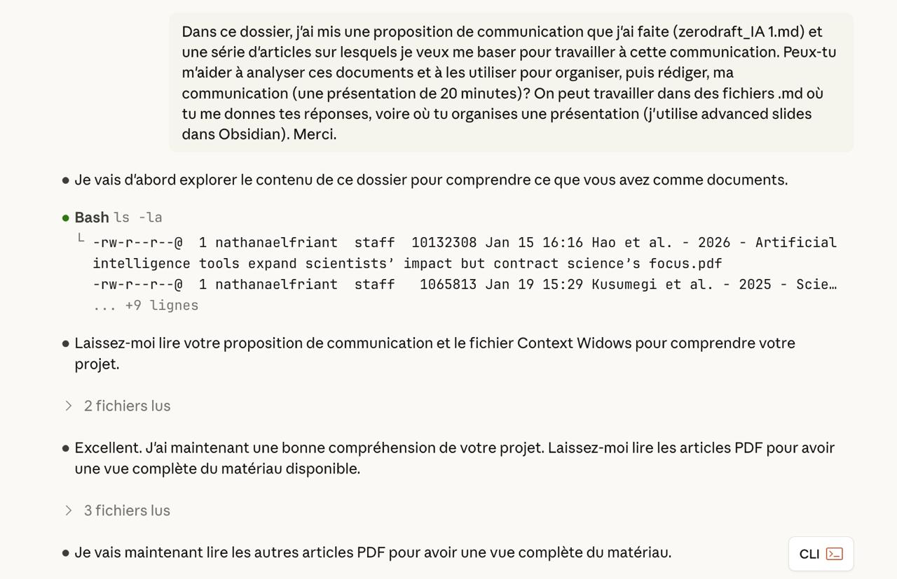
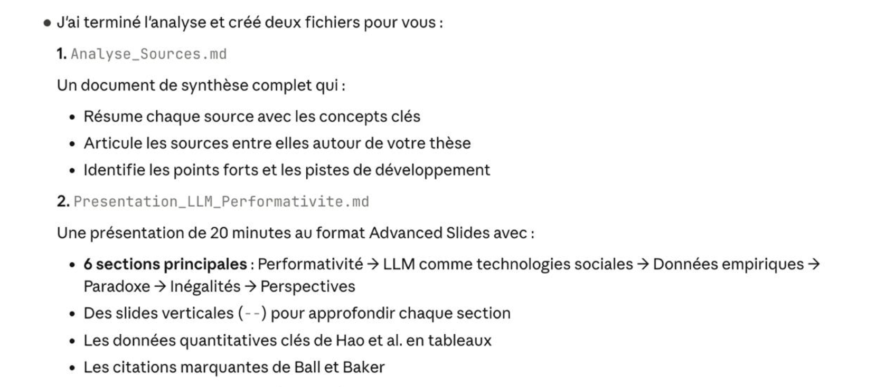

LLMs et emballement de la performativité dans l'enseignement supérieur
Nathanaël Friant
Université libre de Bruxelles
Pré-SETT - 28 Janvier 2026
Une communication différente
- Point de départ: vécu personnel
- Expérimentations avec les LLM
- Vécu de prof. depuis l'intérieur de l'université
- Sérendipité
Résultat: notes éparses, lecture et enregistrement d'une collection d'articles scientifiques et de billets de blogs, liens entre concepts
Une solution pour en faire une présentation?
 (Claude Code, modèle Opus 4.5)Une solution pour en faire une présentation? (2)
 (Claude Code, modèle Opus 4.5)Et franchement, j'aurais pu arrêter là ma préparation.
La présentation était très bien. Je connaissais les articles pour les avoir lus.
Mais cela aurait-il été correct?
Il y aurait pu avoir des erreurs
Guo, X., Dong, L., & Hao, D. (2024). RETRACTED : Cellular functions of spermatogonial stem cells in relation to JAK/STAT signaling pathway. Frontiers in Cell and Developmental Biology, 11, 1339390. https://doi.org/10.3389/fcell.2023.1339390Pourquoi ai-je procédé de la sorte?
Mon hypothèse est que, comme chargé de cours à l'université, les LLM m'offrent une échappatoire apparente à la tension créée par la performativité.
Ils me permettent de performer. Mais ils peuvent m'empêcher d'être.
Le problème
En me permettant cela, les LLMs s'insèrent dans une boucle de rétroaction qui intensifie collectivement ce qu'ils semblent résoudre individuellement.
Mon cadre théorique
Des technologies culturelles et sociales
"Large models should not be viewed primarily as intelligent agents but as a new kind of cultural and social technology, allowing humans to take advantage of information other humans have accumulated." (p. 1153)Farrell, H., Gopnik, A., Shalizi, C., & Evans, J. (2025). Large AI models are cultural and social technologies. Science, 387(6739), 1153-1156.
Des technologies culturelles et sociales (2)
"But these systems do not merely summarize this information, like library catalogs, internet search, and Wikipedia. They also can reorganize and reconstruct representations or 'simulations' of this information at scale and in new ways, like markets, states, and bureaucracies." (p. 1154)Farrell, H., Gopnik, A., Shalizi, C., & Evans, J. (2025). Large AI models are cultural and social technologies. Science, 387(6739), 1153-1156.
Des représentations avec pertes
"Lossy JPEGS"
| Technologie | Ce qu'elle compresse | Ce qu'elle perd |
|---|---|---|
| Prix de marché | Relations économiques complexes | Externalités (ex: carbone) |
| Statistiques gouvernementales | Caractéristiques des populations | Nuances, cas particuliers |
| Catégories bureaucratiques | Diversité sociale | Singularités individuelles |
| LLM | Corpus textuels massifs | Vérité, rareté, nouveauté |
La performativité
"Performativity is a technology, a culture and a mode of regulation that employs judgements, comparisons and displays as means of incentive, control, attrition and change – based on rewards and sanctions (both material and symbolic)." (p. 216)Ball, S. J. (2003). The teacher's soul and the terrors of performativity. Journal of Education Policy, 18(2), 215-228. https://doi.org/10.1080/0268093022000043065
Trois technologies néolibérales
- Le marché : compétition, choix
- Le management : contrôle organisationnel
- La performance : mesure, comparaison
L'effet sur les professionnels
- Transformation de ce qu'ils font et de ce qu'ils sont
- Production de "fabrications"
- Insécurité ontologique
"We become ontologically insecure: unsure whether we are doing enough, doing the right thing, doing as much as others, constantly looking to improve, to be better, to be excellent." (p. 220)Ball, S. J. (2003). The teacher's soul and the terrors of performativity. Journal of Education Policy, 18(2), 215-228.
On a donc notre contexte social
- Les LLMs sont des technologies sociales
- Qui s'insèrent dans un régime de performativité qui crée la demande pour des outils de production rapide.
Fabrications
"Fabrications are versions of an organization (or person) which does not exist – they are not 'outside the truth' but neither do they render simply true or direct accounts – they are produced purposefully in order 'to be accountable'." (p. 224)Ball, S. J. (2003). The teacher's soul and the terrors of performativity. Journal of Education Policy, 18(2), 215-228.
Les LLM et la science
"To ask about LLMs and science is to ask what program was already running when they arrived. The program, as it turns out, had been running for decades, and it was not optimized for epistemic depth."Baker, K. (2025). Context Widows, or, of GPUs, LPUs, and Goal Displacement. Artificial Bureaucracy (Substack). https://artificialbureaucracy.substack.com/p/context-widows
Métriques de citations
Comment gérer un système qui produit plus de littérature que quiconque peut lire?
"The intention was to solve an information overload problem—to help researchers find the important work in a flood of publication. This was a reasonable response to a real problem. But solutions curdle."
Métriques de citations (2)
"The metrics flattened this distinction into a single function: citation as credit, as endorsement, as vote."
Déplacement des objectifs (Merton, 1940)
"The measure becomes the target; the proxy becomes the prize."Baker, K. (2025). Context Widows, or, of GPUs, LPUs, and Goal Displacement. Artificial Bureaucracy (Substack).
L'arrivée des LLMs
"Into this context—a scientific system already optimized for measurable output, already decades into goal displacement, already reshaping research priorities around metrics rather than problems—arrive large language models."Baker, K. (2025). Context Widows, or, of GPUs, LPUs, and Goal Displacement. Artificial Bureaucracy (Substack).
Il existe des données empiriques
Hao, Q., Xu, F., Li, Y., & Evans, J. (2026). Artificial intelligence tools expand scientists' impact but contract science's focus. Nature. https://doi.org/10.1038/s41586-025-09922-y
41,3 millions d'articles (1980-2025)
Le paradoxe individuel/collectif
| Niveau | Effet de l'IA |
|---|---|
| Individuel | 3 fois plus de publications, 4,8 fois plus de citations, -1,37 ans pour devenir PI |
| Collectif | -4,63% étendue des connaissances, -22% engagement mutuel |
Des sujets délaissés
"What are the topics that are most likely to be left behind from AI-augmented research across fields? Those with less available data include critical scientific questions regarding the origins of natural phenomena, where data are necessarily reduced."
"This could shift collective attention away from new and original questions that lack the data required for AI to demonstrate benefit."Hao, Q., Xu, F., Li, Y., & Evans, J. (2026). Artificial intelligence tools expand scientists' impact but contract science's focus. Nature.
D'autres données empiriques
Kusumegi, K., Yang, X., Ginsparg, P., de Vaan, M., Stuart, T., & Yin, Y. (2025). Scientific production in the era of large language models. Science, 386(6728), 1240-1243. https://doi.org/10.1126/science.adw3000
D'autres données empiriques (2)
"The sharp contrast in quality assessments across the distribution of language complexity in the two groups—human-written and LLM-assisted manuscripts—confirms that complex LLM-generated language often disguises weak scientific contributions."
Quels liens avec l'enseignement?
Molesworth, M., Scullion, R., & Nixon, E. (Eds.) (2011). The Marketisation of Higher Education and the Student as Consumer. London: Routledge.
Le versant étudiant de la performativité analysée par Ball chez les enseignants
L'étudiant comme consommateur
"Students seek to have a degree rather than to be learners." (Molesworth et al., 2009, p. 172)
"Students have become well-tuned consumers, their wealth of experience in commercial markets has shaped much of the way they respond to their desires, to opportunity and to choices they face." (Molesworth et al., 2009, p. 233)
L'étudiant comme consommateur (2)
"Education should create citizens who set their own interests aside for the greater good and who are willing to offer their knowledge and minds in the service of others. This is the opposite to the neo-liberal perspective of students and citizens pursuing their own self-interest." (Nordensvärd, p. 166)
Un diplôme comme "ticket"
Rendu plus accessible par l'utilisation des LLM
"This presentation of HE as a 'ticket' creates the sense that in attending university, students are accessing (perhaps purchasing) the 'graduate premium' irrespective of the extent of their engagement with the learning process." (Williams, citant Mandelson, 2009, p. 171-172)
Cognitive offloading
"The balance here is ultimately between using AI as a true study aid in a way that facilitates meaningful learning, and using it to cognitively offload tasks in a way that hinders learning."Veale, M., Black, I., Dsouza, M., Fisher, M., Ghaus, M., Gibbs, T., Lynskey, O., O'Cinneide, C., Scotford, E., Thomas, O., Trapova, A., & Trapp, K. (2025). Artificial Intelligence, Education and Assessment at UCL Laws: Current Thinking and Next Steps for the UK Legal Education Sector. UCL Legal Studies Research Paper Series 04/2025.
Cognitive offloading (2)
"Learning is the result of human grappling with the parts of the world that resist us."
"Education is, by necessity, inefficient."Drimmer, S. et al. (2025). Four Frictions: or, How to Resist AI in Education. Public Books. https://www.publicbooks.org/four-frictions-or-how-to-resist-ai-in-education/
Un "cas pratique"
Jj. (2025). The Copilot Delusion. deplet.ing. https://deplet.ing/the-copilot-delusion/
- Billet de blog
- Témoignage de praticien
- Un programmeur défendant son métier comme un art face à l'IA
Being vs having
"I like to code. Not supervise. Not hover over a synthetic lobotomized chatbot like some drooling silicon intern... I want to build shit. Real shit. Weird shit. Systems that are on fire type shit."
"There was once magic here. There was once madness. Kids would stay up all night on IRC with bloodshot eyes, trying to render a cube in OpenGL without segfaulting their future. They cared."
Contre le cognitive offloading
"You want real connection to code? You earn that. You dig in. You wrestle with segfaults at 3 in the morning. You pace your apartment muttering about pointer arithmetic... When you outsource the thinking, you outsource the learning."
"You build taste by doing. By hurting. By shaving nanoseconds with surgical tools. By writing a routine on Monday, rewriting it Tuesday, and realizing Wednesday it still sucks."
Performativité vs qualité
"My boss corners me. 'Why aren't you pairing more with him? He types twice as fast as you.' Of course he does. So does a cat having a seizure on a mechanical keyboard. But that doesn't mean it should be writing production code."
"50 million users have an extra 3 seconds of unnecessary lag in a day because you wanted to hit tab rather than write code? That's nearly 5 years of cumulative wasted time."
Goal displacement
"The real horror isn't that AI will take our jobs. It's that it will entice people who never wanted the job to begin with. People who don't care for quality... Vampires with SaaS dreams and Web3 in their LinkedIn bio."
Goal displacement (2)
"And what's worse, we'll normalize this mediocrity. Cement it in tooling. Turn it into a best practice."
"If that happens? If the last real programmers are drowned in a sea of button-clicking career-chasers - then I pity the smart outsider kids to come after me."
Des points positifs tout de même
- Tactiques de résistance et d'appropriation (de Certeau, cité par Agirdag, 2025)
- Révéler les biais
- Comparer les modèles pour montrer que le savoir est situé
- Translanguaging: valoriser les répertoires multilingues des étudiants
- Literacy: conscience critique des contextes sociaux, culturels et politico-économiques
Des points positifs tout de même (2)
"By wiring together so many perspectives across text, audio, and images, large models may allow us to discover unprecedented connections between them for the benefit of science and society. These technologies have most commonly been trained to regurgitate routine information as helpful assistants. A more fundamental set of possibilities might open up if we deployed them as maps to explore formerly uncharted territory." (Farrell et al., 2025, p. 3)
Au début de recherches fascinantes
"Will large models lead to greater cultural homogeneity or greater fragmentation? Will they reinforce or undermine the social institutions of human discovery? As they reshape the political economy, who will win and lose?"
"Can large models be developed to enhance human creativity rather than to dull it? Finding practical answers to such questions will require an understanding of social science as well as engineering. Shifting the debate about AI away from agents and toward cultural and social technologies is a crucial first step toward building that cross-disciplinary understanding (15)" (Farrell et al., 2025, p. 4)
Modeste proposition
Etudier en contexte la "prompting (l)iteracy" d'enseignants universitaires.
| Phase | Méthode | Données collectées |
|---|---|---|
| 0. Recrutement | Questionnaire en ligne | Profil sociolinguistique, usages déclarés, consentement éclairé |
| 1. Session observée | Observation filmée en labo + think-aloud | Vidéo de l'écran + vidéo du participant + verbalisation |
| 2. Export des traces | API Microsoft Copilot (via IT) | Logs de la session : prompts, réponses, métadonnées |
| 3. Débrief filmé | Entretien semi-directif post-session | Vidéo de l'entretien, réflexivité stimulée par extraits |
Merci pour votre attention
Nathanaël Friant
Université libre de Bruxelles
Note sur l'utilisation de LLMs
Claude Opus 4.5 a été utilisé pour m'aider à articuler les sources éparses collectées à l'argument développé dans ma proposition de communication en créant des fiches synthétisant chacune de ces sources et explicitant le lien avec mes arguments.
Une première présentation suite aux prompts présentés en slides 3 et 4 a été entièrement créée par Claude. Elle disponible à l'adresse - https://nathfriant.github.io/llm-performativite/
J'ai entièrement recréé une nouvelle présentation: celle-ci.
Licence

Cette œuvre est mise à disposition selon les termes de la licence
Creative Commons Attribution - Pas d'Utilisation Commerciale - Partage dans les Mêmes Conditions 4.0 International
© 2026 Nathanaël Friant - Université libre de Bruxelles